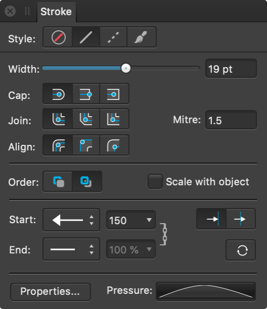

About the Stroke panel
Every object can take a stroke around its bounding box which can take on various properties, e.g. width, color, opacity, line style, etc.

The following controls are found on the panel:
- Style—Select a line style button to change how the line is drawn. Choose from None, Solid Line Style, Dash Line Style, and Texture Line Style, respectively. The last option applies the currently selected brush in the Brushes panel to the stroke.
- Width—Drag to change the width (thickness) of the selected line.
- Cap—Select one of the cap style buttons (Round, Butt, or Square) to vary the contour of the line end.
- Join—Select a setting (Round, Bevel, or Miter) to determine the contour of sharp corners on the stroke. With Miter joins, the Miter setting dynamically controls if beveling occurs by extending each line at the junction by the number of line widths. If the two outer edges meet within that limit, the result is a sharp corner; if not, you’ll get a flat (Bevel) corner.
- Miter—Sets the length of the extension of Miter joins to create either sharp or flat corners.
- Align—Select one of the align buttons to control where the stroke is placed in relation to the object edge, i.e. centered, or on its inside or outside.
- Order—Select one of the order buttons to control where the stroke is placed in relation to the object. Draw stroke behind hides the inner half of the object's outline behind a closed shape—useful with very small objects or when shrinking outlined text. Draw stroke in front always reveals the whole line.
- Scale with Object—Check to scale both line and shape together when resizing a closed shape. Uncheck to keep line width constant.
- Start/End—Select an arrowhead style for the start/end stops of the stroke from the pop-up menu. Choose where to position the start and end styles from Place arrow within the line and Place arrow at the end of the line.
- Percentage—With styles selected, you can enter a percentage to adjust the size of your selected arrowheads in proportion with the stroke width.
 Link—When enabled, the selected Start and End arrowheads are adjusted in proportion to each other, maintaining the current aspect ratio. When deselected, they can be adjusted independently.
Link—When enabled, the selected Start and End arrowheads are adjusted in proportion to each other, maintaining the current aspect ratio. When deselected, they can be adjusted independently.- Swap arrow head with tail—Select to swap the Start and End arrowhead styles.
- Properties—Click to edit the brush used as your Texture Line Style via a Brush dialog.
- Pressure—Displays your current pressure profile after applying a line or brush stroke. Clicking the profile lets you edit the profile and save it for future use.
- Dash—When Dash Line Style is selected, this option allows you to set the design of the dot or dash (see below for details).
- Phase—When Dash Line Style is selected, this option allows you to set the starting point of the dash design (see below for details).
Dot and dash line styles can be created using the Stroke panel. For more information, see Draw curves and shapes.